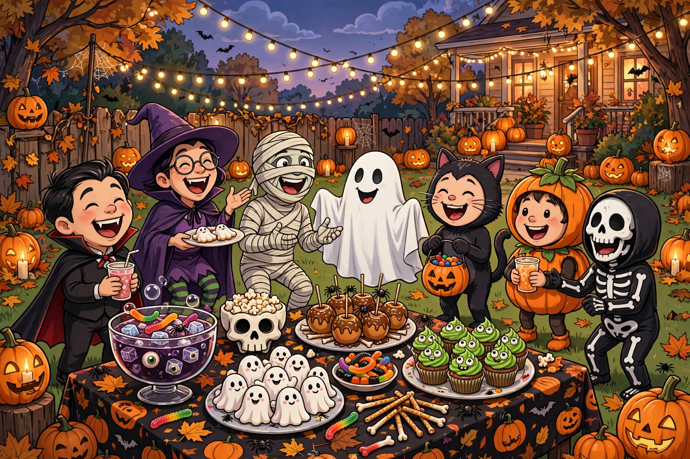

How to throw a Halloween party people actually remember
Most parties are forgotten by Monday. Halloween parties shouldn't be — the holiday hands you atmosphere, costumes, and a theme for free. What separates the legendary ones from the awkward ones isn't budget. It's a handful of decisions made early and a few hosting habits during the night. Here's the whole playbook.
Pick a theme (and mean it)
"Halloween party" is a theme the way "food" is a cuisine. Narrow it down: a haunted mansion dinner, a monster mash dance party, a spooky movie marathon, a murder mystery, a pumpkin-carving contest with prizes. A specific theme does three jobs at once: it tells guests what to wear, it tells you what to buy, and it gives strangers something to talk about in the first ten minutes.
Put the theme on the invitation in plain language — "costumes required, theme is haunted Hollywood" — and watch how much better the costumes get. People rise to a clear brief; they flounder at a vague one.
Timing: the unglamorous secret
Send invitations two to three weeks ahead. October fills up fast, and the people you want most are the ones with the most competing plans. A weekend evening party starting around 7 or 8 gives guests time to eat, arrive in costume, and settle in; starting later than 9 means half your crowd is tired before the fun begins.
If your party lands near the 31st itself, decide early whether trick-or-treaters factor in. A bowl of candy by the door and a porch light you control lets you welcome the neighborhood without derailing the party.
Food that disappears
Party food has two jobs: look the part and be eatable with one hand while holding a drink. Finger foods win. The classics work because they work: a "mummy" wrapped appetizer (crescent dough strips over anything), deviled eggs rebranded as "dragon eyes," a cheese ball shaped like a pumpkin, punch served from something ridiculous.
Label everything with playful names on little cards — it costs nothing and doubles the fun. And always, always mark the common allergens. Nothing kills a party faster than a guest playing detective with the snack table. A simple "contains nuts / dairy / gluten" note on each card covers it.
Plan for about a third more food and ice than you think you need. Running out at 10 pm is the one hosting failure guests remember.
Games that break the ice
Don't over-schedule, but have two or three structured moments ready for when the energy dips. Costume contest with silly categories (best DIY, funniest, most likely to haunt this house) gives everyone a reason to show off. A short Halloween trivia round or a "guess the movie from the quote" game pulls in the shy guests. A photo corner with a backdrop and a box of props keeps the extroverts busy and gives you the pictures.
Music matters more than most hosts think. Build a playlist ahead of time — a mix of Halloween classics and regular party songs, leaning spooky early and danceable late. Set it loud enough to feel like a party, quiet enough for conversation in at least one room.
The hosting habits that make it feel effortless
- Greet everyone at the door, in costume if you can. The host sets the energy. If you're having fun, everyone relaxes.
- Introduce people. "You two both love horror movies" is a better icebreaker than any game.
- Keep the flow moving. Put drinks in one spot, food in another, and the photo corner somewhere visible. Guests follow the layout.
- Have an end time in mind. "Party goes till midnight" on the invite saves you from the awkward 1 am stragglers.
- Prep the morning after, too. Trash bags, a box for lost costume pieces, and leftover containers staged in the kitchen mean cleanup takes an hour, not a weekend.
Start with the theme, send the invites early, feed people well, and be the most enthusiastic person in the room. The rest takes care of itself. Have a killer night.
Keep readingNext: Pet costumes & safety ground rules →